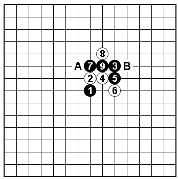
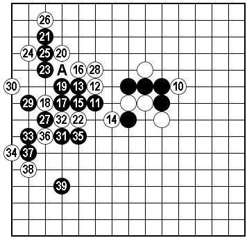

原文由 飞哥 发表于 2010-4-16 17:33:52 :
看了看，这个11确实是妙点，应该是这个10最最简单的杀法了~
顺便打了地毯
［此帖子已被 飞哥 在 2010-4-16 17:34:13 编辑过］
 疏2一10.rar
疏2一10.rar［此帖子已被 飞哥 在 2010-4-16 17:35:16 编辑过］
［ 茗弈小刀 于 2010-4-16 18:43:46 时奖励此帖[金币加 20 威望加1］
才看到，手数写错了，我想说的是13手妙，而非11手 ，11手必然的一手。。。
，11手必然的一手。。。

图1：有棋友问黑9活三时，白10防哪边最强？如图10-A最强防，变化难解。10-B防守不成立，黑棋必胜。

图2：黑11正着，白12最强防。黑13自然的一手，此后白棋可选防点很少。本图的白14最强防，黑15常用形。以下黑17、19是解决问题的关键，黑39后留有多种VCF手段。
如：白14-A，15-22！
转自李洪斌博客
［ 五子痴 于 2010-4-20 18:54:42 时奖励此帖[金币加 20 威望加1］
强悍.....虽然按粗浅的理解一般都选择挡左边 但没想到10走右边是必败了
看了看，这个11确实是妙点，应该是这个10最最简单的杀法了~
顺便打了地毯
［此帖子已被 飞哥 在 2010-4-16 17:34:13 编辑过］
疏2一10.rar［此帖子已被 飞哥 在 2010-4-16 17:35:16 编辑过］
［ 茗弈小刀 于 2010-4-16 18:43:46 时奖励此帖[金币加 20 威望加1］

［此帖子已被 茗弈小刀 在 2010-4-16 18:44:53 编辑过］
16这样杀比较简单：）
［此帖子已被 四川连珠魂 在 2010-4-16 20:28:33 编辑过］
引用：
原文由 飞哥 发表于 2010-4-16 17:33:52 :看了看，这个11确实是妙点，应该是这个10最最简单的杀法了~
顺便打了地毯
［此帖子已被 飞哥 在 2010-4-16 17:34:13 编辑过］
［此帖子已被 飞哥 在 2010-4-16 17:35:16 编辑过］
［ 茗弈小刀 于 2010-4-16 18:43:46 时奖励此帖[金币加 20 威望加1］
才看到，手数写错了，我想说的是13手妙，而非11手